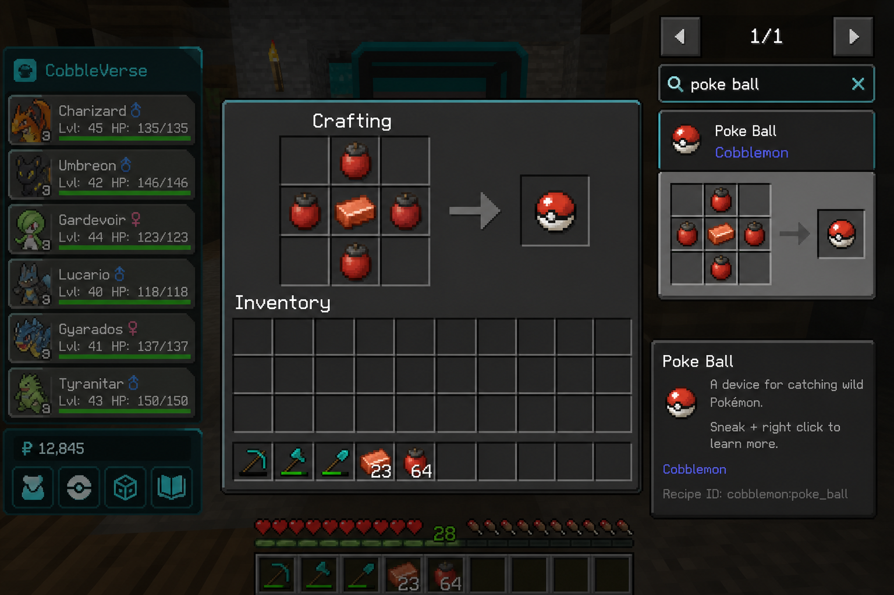
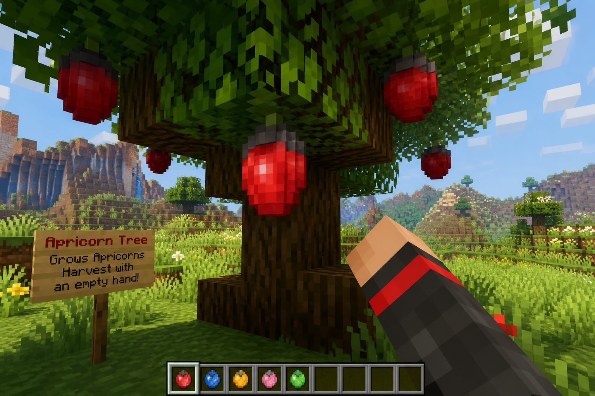

Essential recipes
The crafts every PokeHaven trainer needs in week one. Use REI (E) for exact grids — screenshots show the workflow.
Contents
How to look up any craft
- Press E.
- Use the side recipe list search (REI).
- Type the item name (e.g. great ball, shears, kanto).
- Click the result to pin the pattern on the grid.

Poké Balls
{kind=link}

| Result | Core | Apricorns (typical) |
|---|---|---|
| Poké Ball | Copper ingot | 4× red |
| Great Ball | Iron ingot | Red + blue mix |
| Ultra Ball | Gold ingot | Black + yellow mix |
Full guide: Poké Balls. Harvest trees:
{kind=link}

Early Minecraft toolkit
| Item | Why | REI search |
|---|---|---|
| Crafting table | Everything | crafting table |
| Stone pickaxe | Iron + copper | stone pickaxe |
| Furnace | Smelt ores/food | furnace |
| Shears | Seagrass for Misty map item | shears |
| Bed | Respawn | bed + wool colour |
| Empty Map | Gym maps | empty map |
| Shield | Creeper / brute safety | shield |
Gym map crafts

- Craft Kanto Cartography Table (REI: kanto / cartography).
- Craft the leader’s special item (e.g. Misty → Cerulean Star).
- Craft Empty Map.
- Combine on the Kanto Cartography Table.
Important
Do not right-click the Empty Map in the world first. That ruins it for gym crafting.
Walkthrough: Gym maps · Villager method: Villages.
Healing & convenience
- Potions / Revives — craft, loot Centers, or buy (Economy).
- Oran Berries — early free healing.
- Waystones — craft/find and activate (Travel).
- PC access —
/pc(Healing & storage).
Datapack recipe database
559 pack recipes (mostly TMs via tmcraft, plus LumyMon / furniture / cuisine) live in the Recipe browser.
Missing Cobblemon JAR crafts?
Balls and many Cobblemon machines are inside mod JARs. Re-install the CurseForge instance locally if you want those auto-parsed later; until then this essentials page + REI cover beginners.